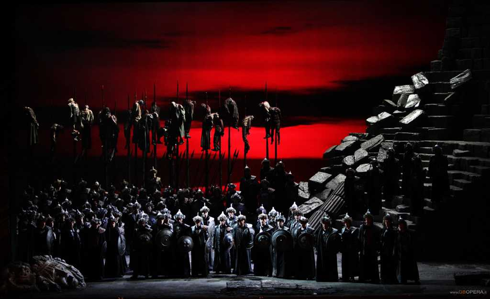
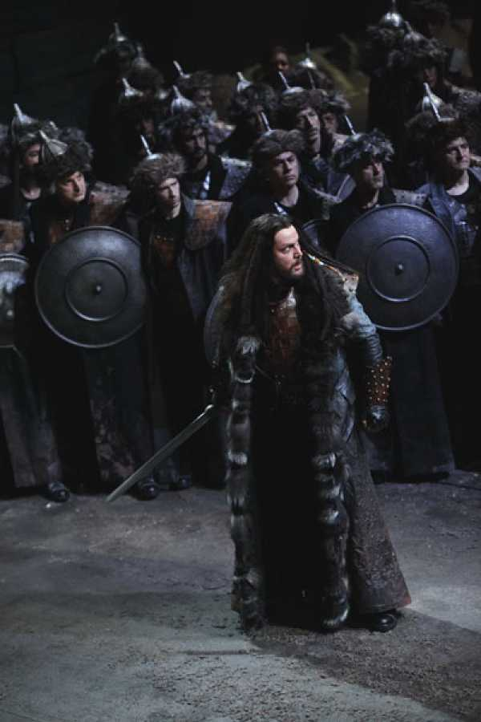
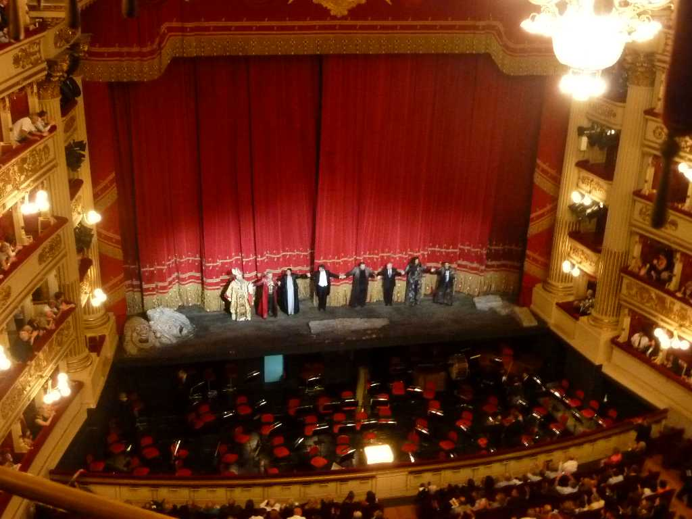

Verdi Attila Teatro alla Scala Milano
イタリア建国１５０周年記念で外国人に立ち向かい自由と独立を求める愛国のオペラと云われるヴェルディの傑作アッティラを鑑賞

Direttore: Nicola Luisotti Orchestra e Coro del Teatro alla Scala Attila: Michele Pertusi Odabella: Lucrecia Garcia

July 4 2011 Attila Teatro alla Scala
スカラ座は宮廷劇場以来の伝統を誇るイタリアオペラ界の最高峰とされる 今年２０１１年はイタリア統一１５０周年記念として１年を通してイタリア作家の演目のみが公演されている

 Scala
AI解説
Scala
AI解説